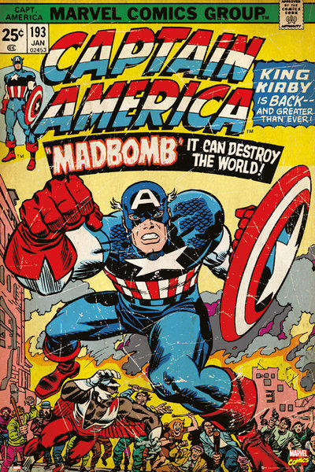

|

|
漫威漫畫漫威漫畫由美國西部大開發時代題材低俗雜誌出版商馬丁·古斯曼設立於1939年，當時公司名稱為及時漫畫。該公司首本刊物《漫威漫畫創刊號》於1939年1月出版，霹靂火和納摩兩位超級英雄分別作為正反派在首期亮相，該期連同再版共售出90萬份。內容由裝幀設計創作。次年，及時漫畫擁有了自己的員工。 由於受到來自電視和其他媒體的競爭，到了二十世紀五十年代的早期和中期，漫畫書已經過時。 首位真正意義上的主編是喬·西蒙（Joe Simon），他與新興產業著名藝術家傑克·科比（Jack Kirby）為1941年3月的創刊號創作了首位以愛國為主體的超級英雄美國隊長，近一百萬的銷量證明該角色熱門程度。 2009年12月31日，華特迪士尼公司以42.4億美元現金加股票的價格收購漫威娛樂。華特迪士尼公司表示，漫威娛樂的股東所持有的每股股票將獲得30美元現金，加上華特迪士尼公司股票0.745股。 |